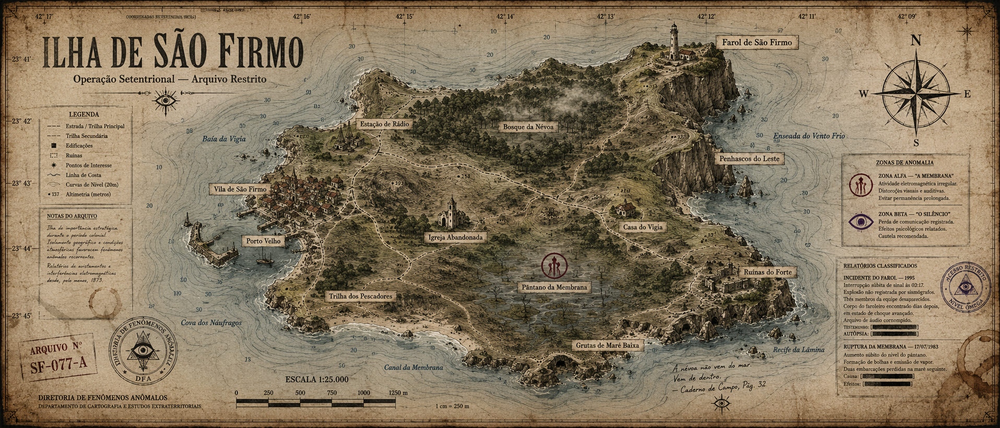

SV INDUSTRIAL SYSTEMS // UNIDADE 04115V · 60HZ · NÃO DESCONECTAR
SV
SANCTUM VERITATIS
INTERFACE DE ACESSO RESTRITO
ESTAÇÃO SV-04
VALIDANDO ASSINATURA...
0% // SINCRONIZANDO ÍNDICE
ESTAÇÃOSV-04 / COSTA
USUÁRIOAGENTE EXTERNO
ACESSOGRAU V
CONEXÃO SEGURA
--.--.------:--:--
SR-07 / OPERAÇÃO ATIVA / VISÃO GERAL
SETENTRIONAL
RESTRITO GRAU V
RESUMO DE MOBILIZAÇÃO
São Firmo é uma ilha do Atlântico ausente de cartas marítimas recentes. O último mapa verificável foi recolhido em ; todas as cópias posteriores apresentam alterações incompatíveis entre si.
O farol permaneceu oficialmente desativado desde o Incidente de 1995. Ainda assim, transmissões são detectadas todas as noites entre 02:13 e 03:07. Moradores constam simultaneamente como vivos, mortos e nunca registrados.
Documentos civis foram apagados ou reescritos. A Membrana está em ruptura. A equipe enviada em 2011 deixou de responder após informar que o farol possuía .
A Sanctum Veritatis iniciou uma nova mobilização. Objetivo: localizar sobreviventes, recuperar os registros de 1995 e impedir que o sinal encontre a costa.
“O Norte Verdadeiro aponta para o abismo.”
01Reconhecer São FirmoPENDENTE
02Localizar a equipe anteriorSEM CONTATO
03Conter o sinal do farolCRÍTICO
LIVE
[02:13:07] Sinal luminoso detectado além do horizonte.
SR-07 / ÍNDICE DOCUMENTAL
ARQUIVOS DA OPERAÇÃO
INTEGRIDADE GERAL: 61%
>
12 REGISTROS DISPONÍVEIS // ALGUNS ARQUIVOS EXIGEM PROGRESSO DE INVESTIGAÇÃO
CÓDIGODOCUMENTODATAINT.ESTADO
NENHUM REGISTRO CORRESPONDE À CONSULTA.
SR-07 / RECONSTRUÇÃO HISTÓRICA
LINHA DO TEMPO
3 DATAS EM CONFLITO
18??18911937199520112026
SR-07 / SUBSISTEMA ÓPTICO
REGISTROS DO FAROL
SINAL ATIVO
TELEMETRIA DO FEIXECANAL L-01
LIVRO DO FAROLEIRORECUPERAÇÃO PARCIAL
— Lâmpada principal energizada sem fonte elétrica.
— Feixe completa uma rotação para dentro da estrutura.
— Operador esquece o próprio nome durante 17 segundos.
—
SR-07 / INDEXAÇÃO BIOMÉTRICA
PESSOAS DE INTERESSE
5 REGISTROS // 2 CONFLITANTES
SELECIONE UM REGISTRO BIOMÉTRICO.
SR-07 / TAXONOMIA DO OUTRO LADO
ENTIDADES
OBSERVAÇÃO LIMITADA
SR-07 / INTERCEPTAÇÃO DE SINAIS
TRANSMISSÕES
ESCUTA ATIVA
FREQ.09.131MHz // AM
TRANSCRIÇÃO AUTOMÁTICAINTEGRIDADE 00%
[CANAL PRONTO. AGUARDANDO DECODIFICAÇÃO.]
SR-07 / CARTOGRAFIA INSTÁVEL
MAPA DE SÃO FIRMO
ARQUIVO CARTOGRÁFICO SF-077-A // ESCALA 1:25.000

ARRASTE PARA NAVEGAR // CLIQUE NOS MARCADORES PARA CONSULTAR // SETAS MOVEM O MAPA // + E − ALTERAM A ESCALA
SR-07 / DIRETRIZES DE CAMPO
PROTOCOLOS
LEITURA OBRIGATÓRIA
00 / 06 PROTOCOLOS LIDOS
SR-07 / RECUPERAÇÃO FORENSE
ARQUIVOS CORROMPIDOS
SETOR INSTÁVEL
RECUPERADOR MAGNÉTICO // FITA 04
SETORES RECUPERÁVEIS: 03
Selecione fragmentos no despejo hexadecimal. Alguns blocos não pertencem ao arquivo original.
_ _ _ _ _ / _ / _ _ _ _ _
SR-07 / ÍNDICE NÃO CATALOGADO
DIRETÓRIO RESTRITO
ACESSO FRAGMENTÁRIO
SV
Este diretório não responde a menus. Sete rotas foram preservadas em setores antigos do sistema.
As iniciais constam em um registro do Núcleo de Integridade:
A Sanctum Veritatis procura agentes capazes de investigar o que foi apagado, proteger quem ainda se lembra e permanecer em silêncio quando o farol disser seus nomes.
AVISO: comunicações externas não são consideradas seguras. Não compartilhe material classificado fora dos canais designados.
SV / REGISTRO INSTITUCIONAL
SOBRE A SANCTUM
FUNDAÇÃO: [CONFLITANTE]
SANCTUM VERITATIS // A VERDADE SOB VIGÍLIA
Guardamos aquilo que a realidade tenta esquecer.
A Sanctum Veritatis é uma organização de investigação, custódia e contenção paranormal. Seus primeiros registros antecedem sua fundação oficial em quarenta e três anos. Nenhum documento concorda sobre quem a criou.
Seus agentes operam em células compartimentadas. Cada arquivo é uma contenção; cada testemunho, um risco. A organização não promete salvar o mundo. Promete impedir que o Outro Lado aprenda a pronunciá-lo.
OBSERVAR SEM SER VISTO.REGISTRAR SEM SER LEMBRADO.CONTER SEM SER NOMEADO.
SV / GATEWAY DE REDE
CONEXÃO EXTERNA
CRIPTOGRAFIA NÃO GARANTIDA
SV-04REDE EXTERNA
Saída do ambiente compartimentado
Os destinos abaixo pertencem a redes externas ou arquivos públicos da organização. A sessão operacional permanecerá registrada.